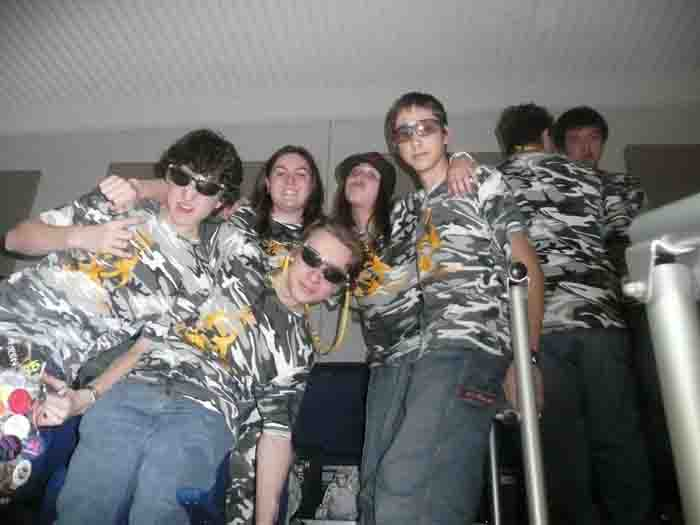

Welcome to the
home of Team 375: The
Robotic Plague. We are a ten year veteran team having started in 2000,
competing annually in the FIRST Robotics
competition. Aside from
participating in the competition, we strive to spread the values of
FIRST, including,
but not limited to gracious
professionalism, perseverance,
teamwork,
courtesy,
equality,
and leadership.
We show our robot in several technology fairs and mentor numerous
rookie teams to help in the broadcasting of this message.
Underneath
our collective team are quite a few subteams. These include the build,
animation, website, programming and Chairman's team.
You can view each specific subteam in great detail by using the menu to
the right.